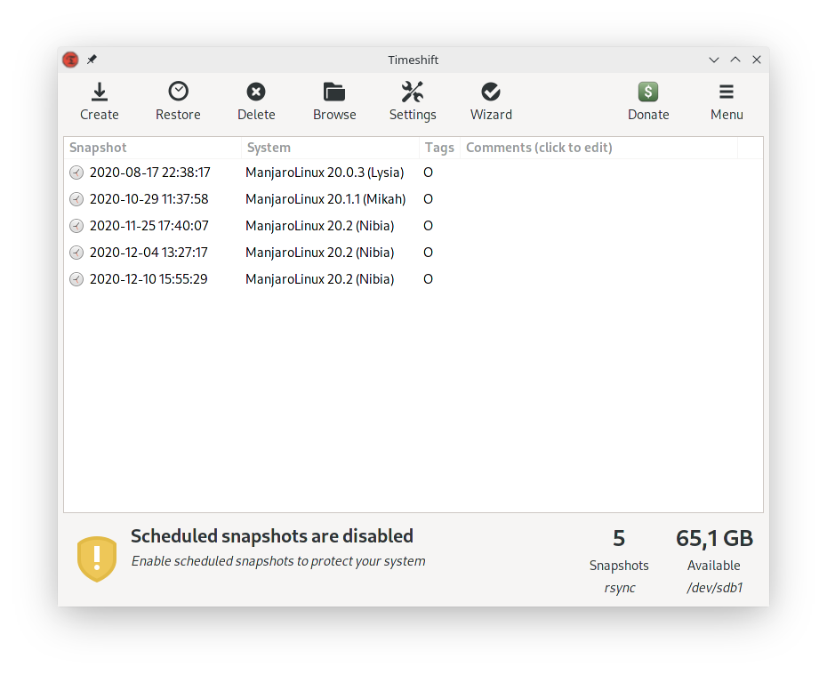
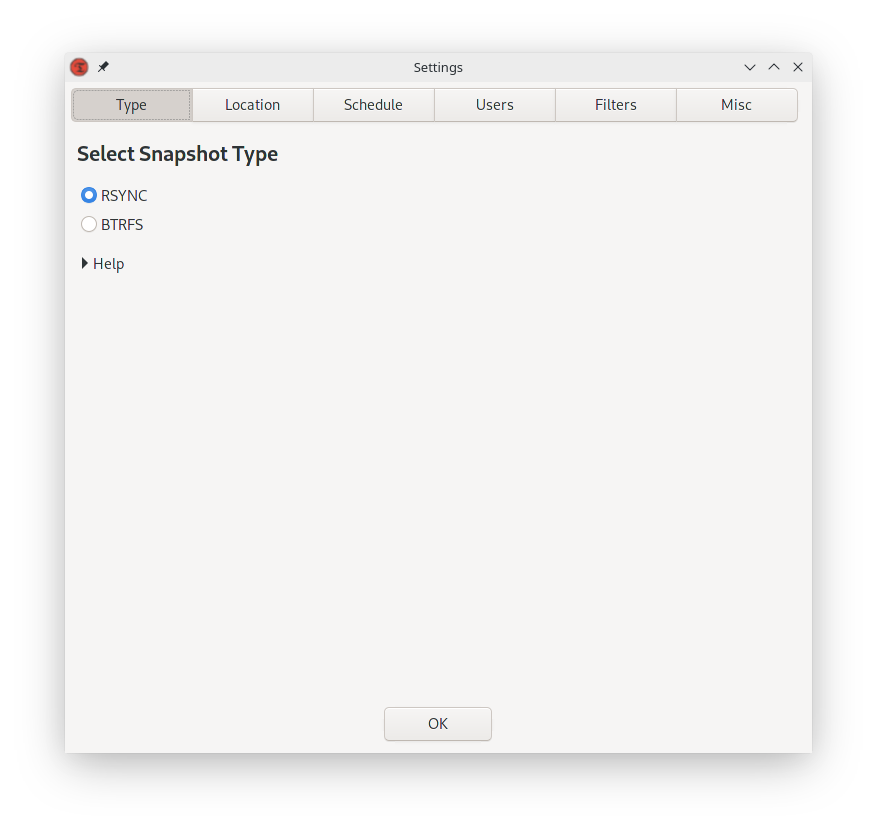
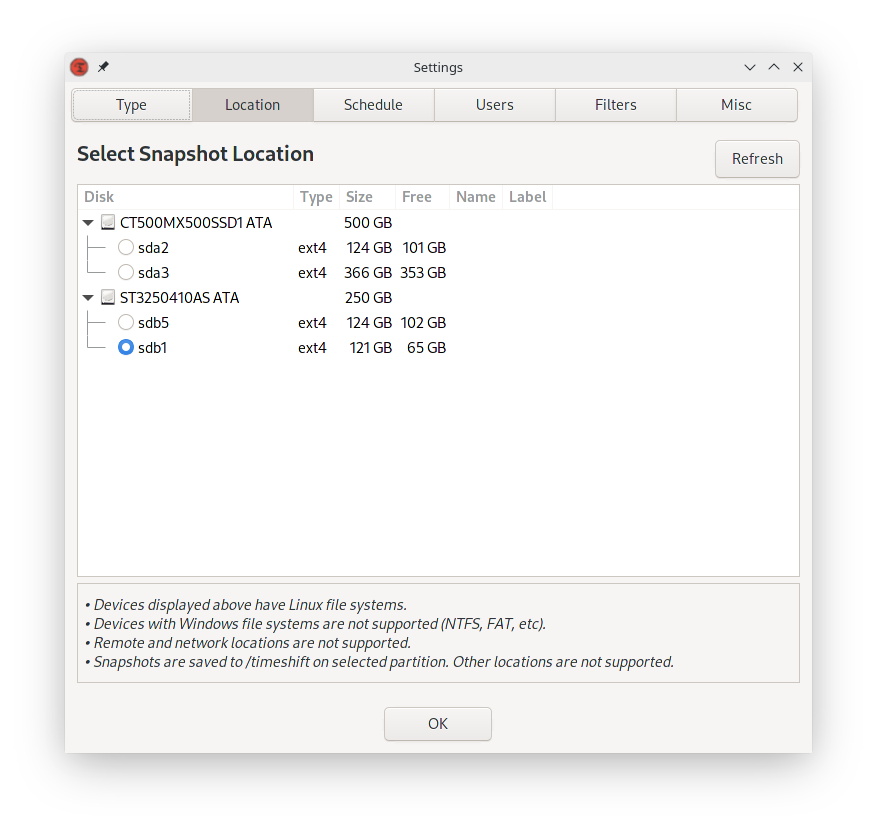
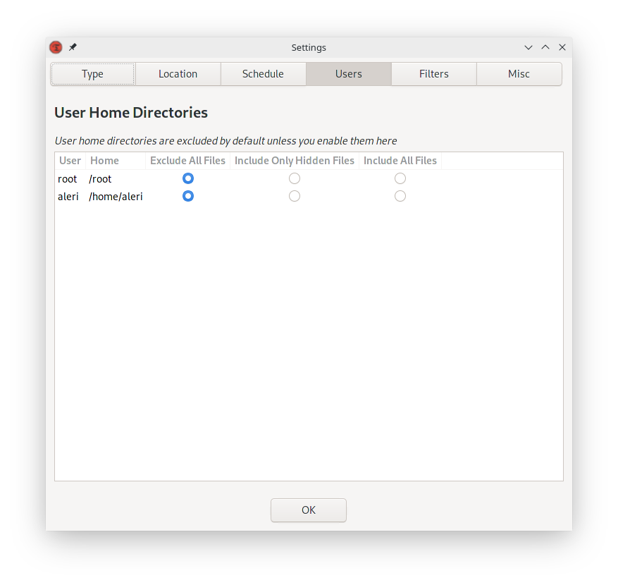
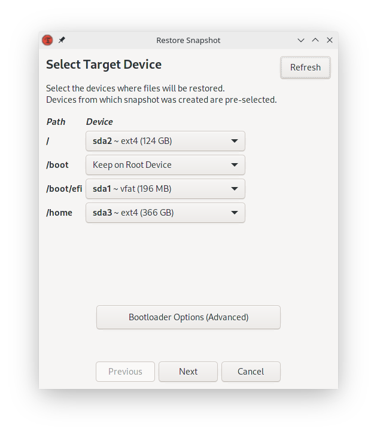

Timeshift backup utility for Linux
Sometimes updaitng your Linux system or editing some configuration settings can cause it to break. Timeshift backup utility provides a way to restore the system if this happens.
Configuration
When running Timeshift for the first time, it will ask for configuration.
If you are using BTRFS file system, choose BTRFS, otherwise choose RSYNC.
Choose disk partition where snapshots will be stored.
It is possible to make it automatically create snapshots on a schedule, but I do not use it.
By default, it excludes user home directories from snapshots.
If some update or configuration change causes your system to break, select a snapshot and hit "Restore"
Available as video here
2020/12/28